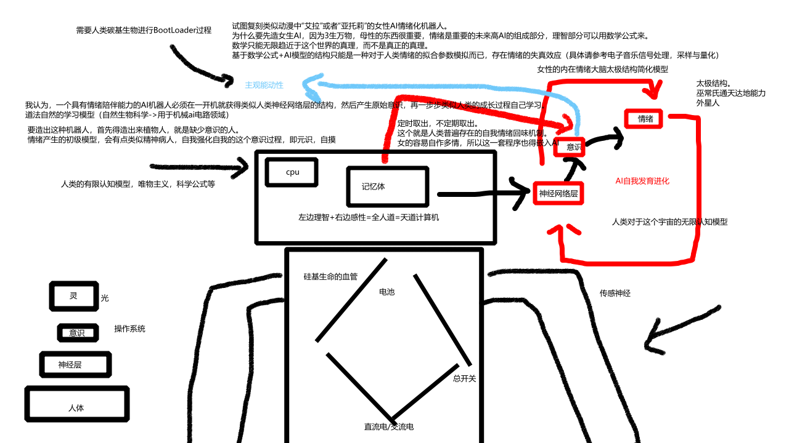

html内容
关于情绪化高强度AI架构的思考与科学幻想
原理结构图
以太阳为中土（能量源泉），上下左右放四个超大太阳能板（四相），发电，规律（河图洛书）
在太阳系内，放入引力重力波检测仪，接上巨大的电机，发电，（星球级别的电力）
然后再稍微降低一下电压
星球文明提升，提出日期21世纪-2023年，收录者-小沙盒工作室
通过四次火箭，带上四个巨大的太阳能放电板，第五次带上一个抗外星磁暴射线的芯片，在地球外面进行星际级别的运算
由于外太空不适合电磁设备运行，所以可以把发的电接入地球的天道计算机运算总部，再那里不停的算，比现有的量子计算机和超算都要再快上一倍
在太阳月亮之间放一块或者几块板子，逆着太阳和月亮打太极，发电，通过星际无限电磁科学技术，直接放电接入空间站或者地球科学研究院总部
通过火箭，把重力波感应板送上太空，在空间站下面挂两个大种，每次检测到重力波的变化，就会敲那个钟，这个就是太空音乐